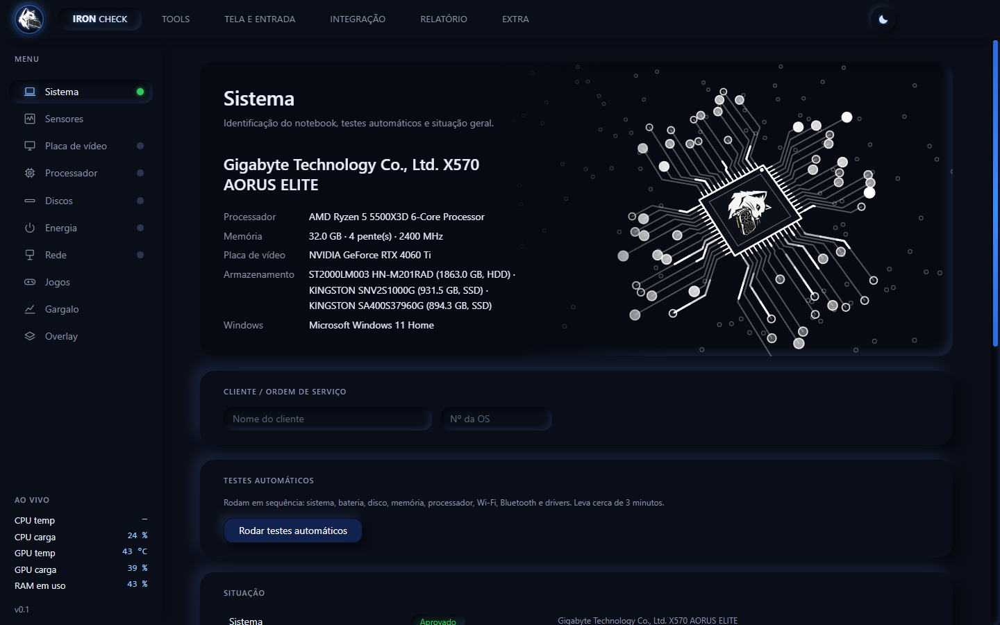
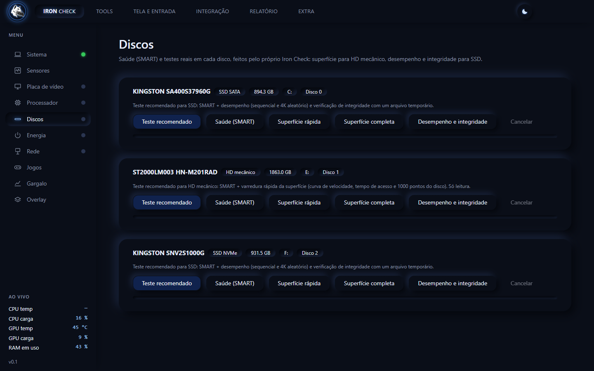
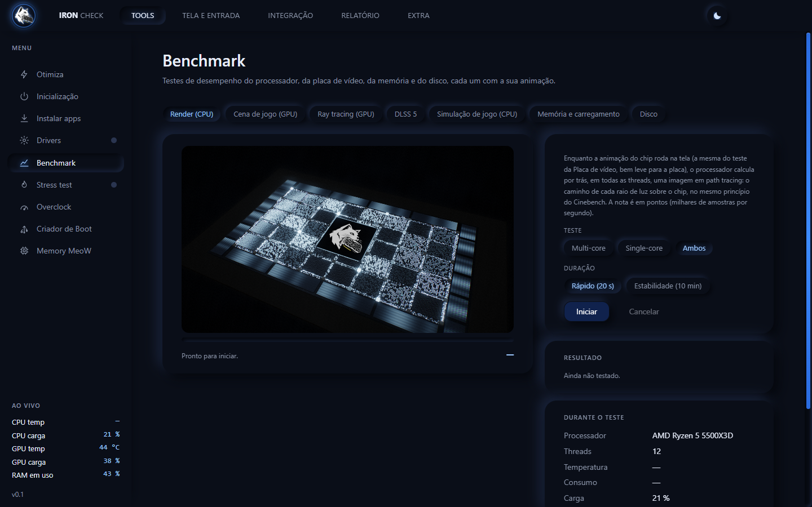
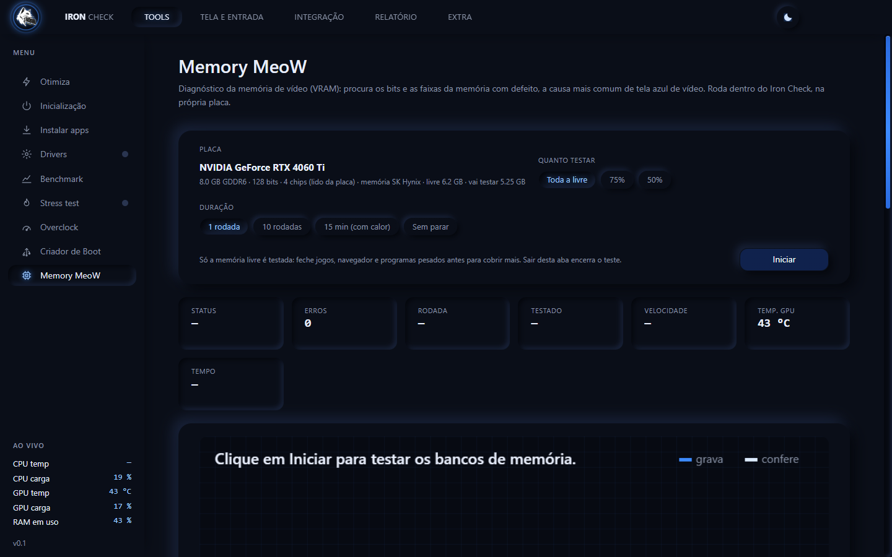
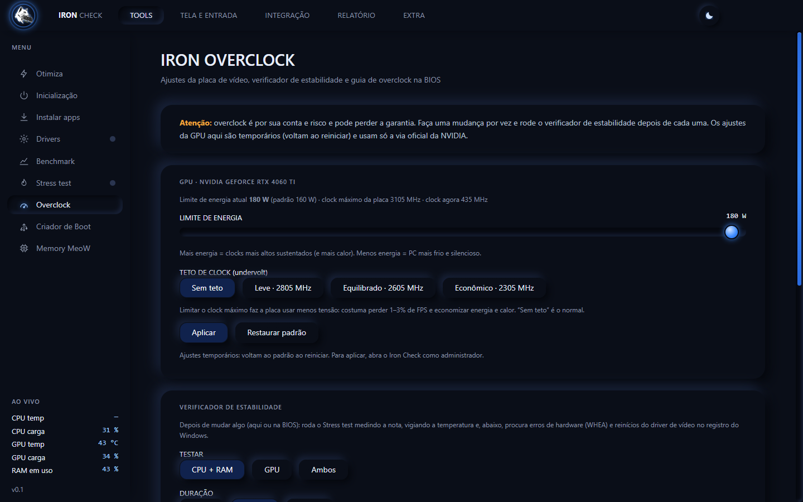
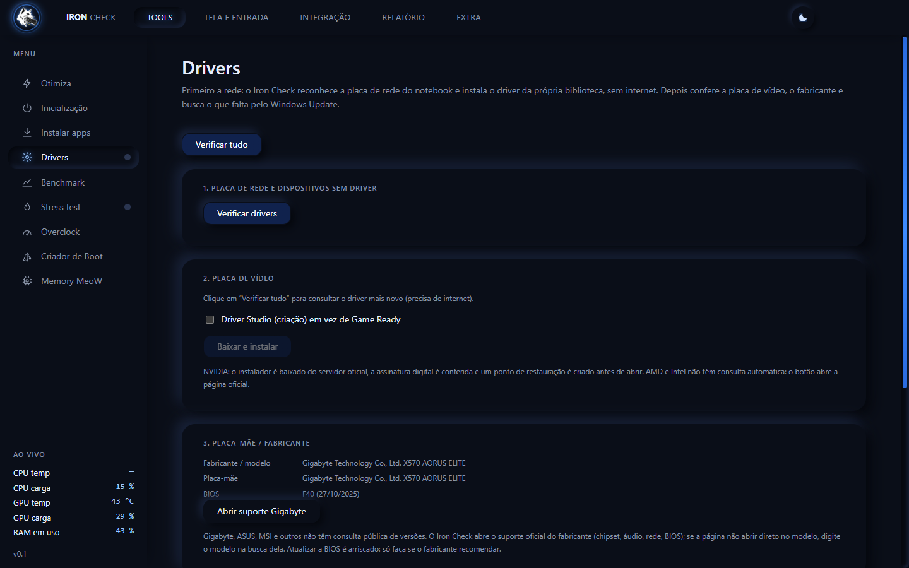
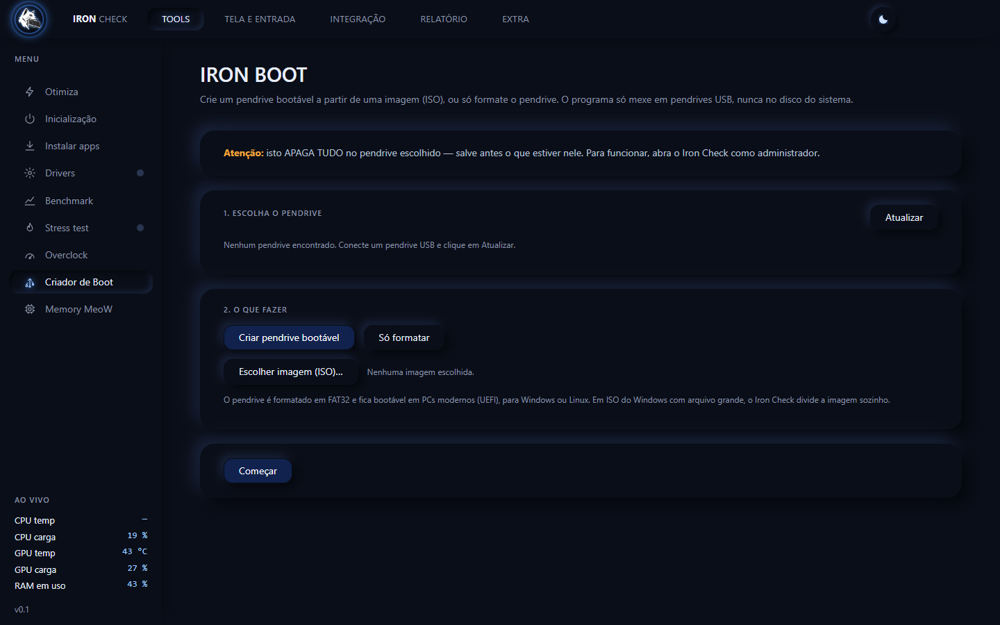
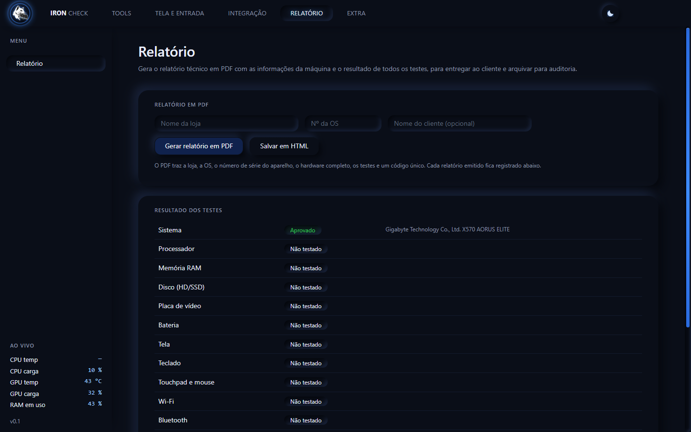

Detalha o computador inteiro
Processador, memória, placa de vídeo, discos, tela, bateria, rede, segurança e mais, no estilo CPU-Z, organizado em categorias.
Testa todas as peças do computador, instala os drivers que faltam, faz overclock seguro e entrega um laudo em PDF com a ordem de serviço. Tudo em português, num único arquivo que roda do pendrive.
Windows 10 ou 11 (64 bits) · um arquivo só, sem instalar · precisa de uma chave de assinante para liberar

Do diagnóstico ao laudo, tudo na mesma janela. Consertou? Agora prove.
Processador, memória, placa de vídeo, discos, tela, bateria, rede, segurança e mais, no estilo CPU-Z, organizado em categorias.
Saúde (SMART), varredura de superfície só de leitura e desempenho, com teste específico para HD, SSD SATA e NVMe.
Procura pixels mortos, manchas e vazamento de luz; confere tecla por tecla e gesto por gesto. Essencial após trocar peça.
Vasculha a memória de vídeo bit a bit e aponta a causa provável: linha de dados, faixa de células ou calor e tensão.
CPU, RAM e placa de vídeo juntas, com gráfico dos últimos minutos. Garante que o aparelho aguenta antes de entregar.
Nota de processador, placa, memória e disco, com ray tracing e checagem de compatibilidade com DLSS.
Biblioteca própria (o driver de rede funciona até sem internet), driver de vídeo pelo servidor oficial e o resto pelo Windows Update.
Ajusta a placa NVIDIA pela via oficial, com limite de energia, teto de clock, verificador de estabilidade e guia de BIOS.
Formata o pendrive e grava uma ISO (Windows, Linux ou outra), deixando-o bootável. Só mexe em pendrives USB, nunca no disco do sistema.
Limpa a memória, fecha o que atrapalha e ajusta o Windows para jogos, guardando o valor original. Nunca mexe em segurança.
Identificação da loja e número da ordem de serviço, hardware completo, resultado dos testes e código único para conferir depois se o laudo foi alterado.
Diz se o lag vem do Wi-Fi, do provedor ou de excesso de fila na conexão, com ping, DNS, velocidade e latência sob carga.
Interface escura, direta e em português. Clique em uma tela para ver em tamanho real.







Chame no WhatsApp. Você recebe uma chave de teste com poucos dias de uso, ou a chave de assinante depois do pagamento por Pix.
Baixe o arquivo e abra: não precisa instalar. Pode rodar direto do pendrive, em qualquer computador que você atender.
A mesma chave serve em vários computadores. O programa confere pela internet e libera tudo.
A chave é conferida pela internet. Se o computador ainda não tem rede, a própria tela de ativação oferece a aba Drivers, e só ela.
Chame no WhatsApp e peça uma chave de teste. Ela vale por poucos dias e libera o programa completo.
A assinatura é mensal. Você paga por Pix, manda o comprovante no WhatsApp e recebe a sua chave. Ela serve em vários computadores, pensada para quem atende muitos clientes.
Não. É um único arquivo, que você pode rodar do pendrive. Os dados do programa (chave e configurações) ficam numa pasta ao lado do arquivo, não no computador do cliente.
É o aviso normal de programas novos que ainda não têm reputação no SmartScreen. Clique em Mais informações e depois em Executar assim mesmo.
Para ler a saúde dos discos, a temperatura e instalar drivers, o Windows exige permissão de administrador.
O programa continua funcionando por algumas horas com a última confirmação. Passado esse prazo sem conseguir conferir, ele fica bloqueado até a licença ser confirmada. Seus arquivos nunca são apagados.
Ela é para uso da sua assistência. O servidor registra os computadores e o local aproximado de cada uso, e o uso por muitas pessoas é detectado: a chave pode ser bloqueada.
Os testes funcionam em qualquer placa. Os recursos específicos de placa, como overclock e leitura detalhada, são para NVIDIA GeForce; AMD e Intel funcionam no restante.
Atendimento direto com o desenvolvedor. Tire dúvidas, peça a chave e comece hoje.